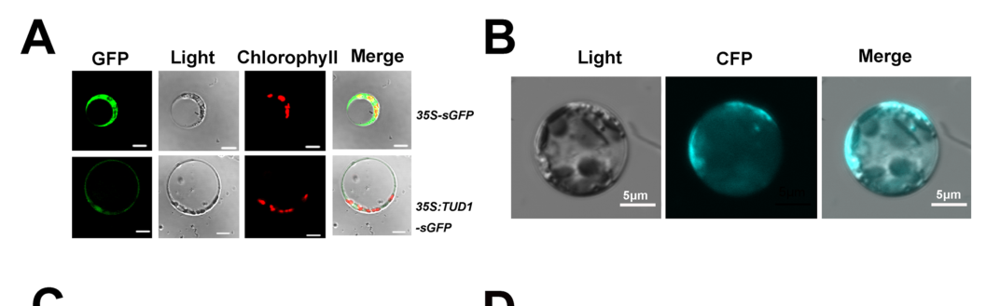

TUD1 (Q10PI9; TAIHU DWARF1 / ERECT LEAF1 / OsPUB75; U-box domain-containing protein 75) is a rice plant U-box (PUB) E3 ubiquitin ligase (EC 2.3.2.27) that acts as a positive regulator of brassinosteroid (BR)-mediated growth and plant architecture. The 459-aa, single-exon protein has an N-terminal U-box domain (residues 64-138) required for catalytic E3 activity, followed by ARMADILLO (ARM) repeats that mediate protein-protein interactions and substrate recruitment. Recombinant GST-TUD1 has in vitro ubiquitination (E3 ligase) activity, and loss-of-function point mutants lack this activity, showing it is essential for function (Hu et al. 2013, PMID:23526892; Sakamoto et al. 2013, PMID:24299927). TUD1::sGFP localizes predominantly to the plasma membrane. Mechanistically, TUD1 physically interacts with the rice heterotrimeric G-protein alpha subunit D1/RGA1 (UniProt GPA1) - shown by BiFC, yeast two-hybrid and GST pull-down - and is genetically epistatic to d1, placing TUD1 downstream of D1 in a Galpha-mediated BR signaling pathway that runs parallel to / partly overlaps the canonical OsBRI1/D61 receptor-kinase pathway (tud1 is additive with d61). Unlike a merely BR-responsive gene, TUD1 is therefore a genuine BR signaling-pathway COMPONENT: it transduces the BR/G-protein signal via regulated ubiquitination, and a later mechanistic study reports TUD1 promotes BR-induced degradation of the GSK3/SHAGGY-like kinase GSK2 (a central negative BR regulator) (Liu et al. 2025, deep-research file). tud1/elf1 loss-of-function mutants are BR-insensitive dwarfs with erect, dark-green leaves and short grains (grain length reduced ~30-44%); the dwarfism is due mainly to decreased cell proliferation and disorganized cell files in aerial organs rather than reduced cell elongation. tud1 mutants show normal GA and cytokinin responses, so the function is BR-specific. The protein's core molecular function is U-box/ARM E3 ubiquitin-protein ligase activity; its core biological role is (positive) regulation of the BR-mediated signaling pathway controlling cell proliferation and plant growth.
| GO Term | Evidence | Action | Reason |
|---|---|---|---|
|
GO:0009742
brassinosteroid mediated signaling pathway
|
IEA
GO_REF:0000043 |
ACCEPT |
Summary: SPKW (GO_REF:0000043) annotation derived from the UniProt keyword "Brassinosteroid signaling pathway"; snapshot-only, removed in the current GOA release when the keyword2GO pipeline was retired for cellular organisms. UNLIKE many keyword-derived hormone-RESPONSE annotations, this one is biologically CORRECT: TUD1 is a bona-fide COMPONENT of the BR signaling pathway, not merely a BR-responsive gene. It physically interacts with the Galpha subunit D1/RGA1 and is genetically epistatic to d1, acting downstream of D1 in a Galpha-mediated BR signaling pathway, and is a positive regulator of BR signaling whose loss makes plants BR-insensitive.
Reason: This is the LEGITIMATE-component case for an SPKW process keyword (cf. DELLA/RHT1 and other genuine signaling-pathway members), and GOA's removal of it was arguably COLLATERAL DAMAGE rather than a justified correction. Multiple orthogonal experiments place TUD1 inside the BR signaling pathway: (i) TUD1 and the Galpha subunit D1 directly interact (BiFC, yeast two-hybrid, GST pull-down) and tud1 is epistatic to d1, so TUD1 acts downstream of D1 in a Galpha-mediated BR pathway [PMID:23526892]; (ii) tud1/elf1 mutants are BR-insensitive (reduced lamina-joint bending and seminal-root inhibition across a 24-eBL dose series) and TUD1/ELF1 is a positive regulator of BR signaling [PMID:23526892, PMID:24299927]; (iii) tud1 mutants have normal GA and cytokinin responses, so the role is BR-specific [PMID:23526892]. The current GOA retains the more precise, experimentally grounded process term "regulation of brassinosteroid mediated signaling pathway" (GO:1900457, IBA+IMP), which is arguably a better representation of TUD1's regulatory role; "brassinosteroid mediated signaling pathway" (GO:0009742) is the broader parent denoting pathway membership. Because GO:1900457 survives in current GOA, removal of the broad GO:0009742 keyword term did NOT leave the gene without BR-process annotation, so this is not catastrophic collateral damage - but the keyword was nonetheless capturing real biology. Retain (ACCEPT) as a correct, if general, pathway-membership annotation; the regulatory framing is better captured by GO:1900457 and by the proposed positive-regulation term GO:1900459 below.
Proposed replacements:
positive regulation of brassinosteroid mediated signaling pathway
Supporting Evidence:
PMID:23526892
These results demonstrate that D1 and TUD1 act together to mediate a BR-signaling pathway.
PMID:23526892
indicating that tud1-5 was epistatic to d1-c
PMID:23526892
These results showed that TUD1 acts in the same genetic pathway as D1 but different from that involving the rice BRI1 ortholog D61.
PMID:24299927
imply that ELF1 functions as a positive regulator of brassinosteroid signaling in rice.
file:ORYSJ/TUD1/TUD1-deep-research-falcon.md
implying that G-protein signaling modulates a ubiquitination step important for BR growth outputs
|
|
GO:0005886
plasma membrane
|
IBA
GO_REF:0000033 |
ACCEPT |
Summary: IBA annotation (is_active_in) propagated across the PUB phylogenetic group for plasma-membrane localization. Directly confirmed in rice by TUD1::sGFP imaging.
Reason: Well supported. The TUD1::sGFP fusion localizes predominantly to the plasma membrane in rice protoplasts, consistent with the UniProt subcellular location (cell membrane, peripheral membrane protein) and with TUD1 acting together with the plasma-membrane Galpha subunit D1 [PMID:23526892]. The is_active_in qualifier is appropriate because TUD1 carries out its BR-signaling E3 function at the plasma membrane.
Supporting Evidence:
PMID:23526892
The TUD1::sGFP fusion protein in rice protoplasts was mainly associated with the plasma membrane
file:ORYSJ/TUD1/TUD1-deep-research-falcon.md
TUD1::sGFP localized predominantly to the plasma membrane in rice protoplasts
|
|
GO:1900457
regulation of brassinosteroid mediated signaling pathway
|
IBA
GO_REF:0000033 |
ACCEPT |
Summary: IBA annotation (involved_in) for regulation of the BR-mediated signaling pathway. This is the core biological process of TUD1 and is supported by direct rice genetics.
Reason: Core function, strongly supported. TUD1/ELF1 is a positive regulator of BR signaling: tud1/elf1 loss-of-function mutants are BR-insensitive, and the gene acts downstream of the Galpha subunit D1 in a BR signaling pathway [PMID:23526892, PMID:24299927]. This regulation-level process term is more precise and informative than the broad pathway term GO:0009742 (the retired SPKW keyword) and is the right level of specificity. The direction of regulation (positive) is captured by the proposed GO:1900459 below.
Supporting Evidence:
PMID:24299927
imply that ELF1 functions as a positive regulator of brassinosteroid signaling in rice.
PMID:23526892
These results demonstrate that D1 and TUD1 act together to mediate a BR-signaling pathway.
file:ORYSJ/TUD1/TUD1-deep-research-falcon.md
connecting G-protein-associated inputs to BR pathway throughput, likely via regulated degradation of negative regulators (GSK2)
|
|
GO:0004842
ubiquitin-protein transferase activity
|
IEA
GO_REF:0000120 |
ACCEPT |
Summary: IEA annotation from ARBA/InterPro (IPR003613, U-box) for ubiquitin-protein transferase activity. TUD1 is a functional E3 ubiquitin ligase.
Reason: Correct and consistent with the demonstrated E3 ligase activity. Purified GST-TUD1 shows in vitro ubiquitination activity dependent on E1/E2, and the U-box is required [PMID:23526892, PMID:24299927]. "Ubiquitin-protein transferase activity" (GO:0004842) is essentially synonymous in usage with the more specific "ubiquitin protein ligase activity" (GO:0061630, IDA, retained); both correctly describe the EC 2.3.2.27 catalytic function. Accept the IEA as a valid computational corroboration of the experimentally demonstrated E3 activity.
Supporting Evidence:
PMID:23526892
Ubiquitination activity was observed for the purified GST-TUD1
PMID:24299927
ELF1 possessed E3 ubiquitin ligase activity in vitro.
|
|
GO:0005886
plasma membrane
|
IEA
GO_REF:0000044 |
ACCEPT |
Summary: IEA annotation from the UniProt SubCell controlled-vocabulary mapping (SL-0039, Cell membrane) for plasma-membrane localization. Duplicates the IBA and IDA plasma-membrane annotations.
Reason: Correct. Maps the UniProt "Cell membrane" subcellular location to GO plasma membrane; consistent with the direct IDA evidence (TUD1::sGFP at the plasma membrane) [PMID:23526892]. Duplicate annotations with different evidence codes are acceptable.
Supporting Evidence:
PMID:23526892
The TUD1::sGFP fusion protein in rice protoplasts was mainly associated with the plasma membrane
|
|
GO:0016567
protein ubiquitination
|
IEA
GO_REF:0000120 |
ACCEPT |
Summary: IEA annotation from ARBA/InterPro/UniPathway (IPR003613; UPA00143, protein ubiquitination) for the protein ubiquitination process. Duplicates the IDA annotation to the same term.
Reason: Correct. TUD1 is an E3 ubiquitin ligase that catalyzes protein ubiquitination (in vitro ubiquitination activity demonstrated) [PMID:23526892, PMID:24299927]; the UniProt PATHWAY line records "Protein modification; protein ubiquitination." The term accurately captures the molecular process the enzyme performs. Duplicate of the experimentally supported IDA annotation.
Supporting Evidence:
PMID:23526892
Ubiquitination activity was observed for the purified GST-TUD1
PMID:24299927
These results suggest that ELF1 ubiquitinates target proteins through an interaction mediated by ARM repeats.
|
|
GO:0061630
ubiquitin protein ligase activity
|
IEA
GO_REF:0000120 |
ACCEPT |
Summary: IEA annotation from InterPro/EC (IPR045185 PUB22/23/24-like; EC:2.3.2.27) for ubiquitin protein ligase activity. Duplicates the IDA annotation to the same term.
Reason: Correct core molecular function. The E3 ubiquitin ligase activity is demonstrated experimentally (in vitro ubiquitination by GST-TUD1, abolished in catalytically dead mutants) [PMID:23526892, PMID:24299927] and corresponds to the UniProt EC 2.3.2.27. Duplicate of the experimentally supported IDA annotation; accept.
Supporting Evidence:
PMID:23526892
Ubiquitination activity was observed for the purified GST-TUD1
PMID:24299927
ELF1 possessed E3 ubiquitin ligase activity in vitro.
|
|
GO:0005886
plasma membrane
|
IDA
PMID:23526892 The U-box E3 ubiquitin ligase TUD1 functions with a heterotr... |
ACCEPT |
Summary: IDA annotation: TUD1::sGFP localizes predominantly to the plasma membrane in rice protoplasts. This is the experimentally demonstrated, core subcellular location.
Reason: Directly supported. In an in-vivo targeting assay the TUD1::sGFP fusion in rice protoplasts was mainly associated with the plasma membrane, the same compartment as its interactor D1 [PMID:23526892]. This is a core cellular-component annotation consistent with TUD1 acting at the plasma membrane in BR/G-protein signaling.
Supporting Evidence:
PMID:23526892
The TUD1::sGFP fusion protein in rice protoplasts was mainly associated with the plasma membrane
|
|
GO:0016567
protein ubiquitination
|
IDA
PMID:24299927 An E3 ubiquitin ligase, ERECT LEAF1, functions in brassinost... |
ACCEPT |
Summary: IDA annotation: ELF1/TUD1 catalyzes protein ubiquitination, demonstrated by in vitro E3 ligase activity. Core molecular process of the gene.
Reason: Well supported by direct experimental evidence. ELF1/TUD1 possesses E3 ubiquitin ligase activity in vitro and is proposed to ubiquitinate target proteins through an ARM-repeat-mediated interaction [PMID:24299927]; Hu et al. independently showed ubiquitination activity of purified GST-TUD1 [PMID:23526892]. Protein ubiquitination is the core process performed by this E3 enzyme.
Supporting Evidence:
PMID:24299927
ELF1 possessed E3 ubiquitin ligase activity in vitro.
PMID:24299927
These results suggest that ELF1 ubiquitinates target proteins through an interaction mediated by ARM repeats.
|
|
GO:0061630
ubiquitin protein ligase activity
|
IDA
PMID:24299927 An E3 ubiquitin ligase, ERECT LEAF1, functions in brassinost... |
ACCEPT |
Summary: IDA annotation: ELF1/TUD1 has E3 ubiquitin ligase activity in vitro. This is the core molecular function of the gene.
Reason: Core function, directly demonstrated. ELF1 possessed E3 ubiquitin ligase activity in vitro [PMID:24299927]; Hu et al. likewise showed ubiquitination activity for purified GST-TUD1, abolished in tud1-1/tud1-3/tud1-4 mutant proteins, establishing that the E3 activity is essential for function [PMID:23526892]. This is the central MF for TUD1.
Supporting Evidence:
PMID:24299927
ELF1 possessed E3 ubiquitin ligase activity in vitro.
PMID:23526892
tud1-1, tud1-3 and tud1-4 proteins did not possess any apparent E3 ligase activity
PMID:23526892
showing that the ubiquination activity of TUD1 is essential for its function
|
|
GO:1900457
regulation of brassinosteroid mediated signaling pathway
|
IMP
PMID:24299927 An E3 ubiquitin ligase, ERECT LEAF1, functions in brassinost... |
ACCEPT |
Summary: IMP annotation: elf1/tud1 loss-of-function mutants are BR-insensitive, demonstrating that the gene regulates the BR signaling pathway. Core biological process.
Reason: Core function, supported by mutant phenotype. The spontaneous elf1-1 mutant produces a BR-insensitive dwarf phenotype with erect leaves and short grains, and physiological analyses indicate ELF1 is a positive regulator of BR signaling [PMID:24299927]; Hu et al. independently showed tud1 mutants are BR-insensitive and act downstream of D1 [PMID:23526892]. The IMP correctly captures the gene's regulatory role in the BR pathway. The positive direction is captured by the proposed GO:1900459 below.
Supporting Evidence:
PMID:24299927
Physiological analyses suggested that elf1-1 is brassinosteroid-insensitive, so we hypothesized that ELF1 encodes a positive regulator of brassinosteroid signaling.
PMID:24299927
imply that ELF1 functions as a positive regulator of brassinosteroid signaling in rice.
|
|
GO:0005515
protein binding
|
IPI
PMID:23526892 The U-box E3 ubiquitin ligase TUD1 functions with a heterotr... |
MODIFY |
Summary: IPI annotation (with UniProtKB:Q0DJ33, the rice heterotrimeric G-protein alpha subunit D1/RGA1/GPA1) using the uninformative generic term "protein binding". The specific, experimentally demonstrated interaction is with the Galpha subunit.
Reason: "Protein binding" (GO:0005515) is an uninformative catch-all term and is discouraged by curation guidelines. The actual binding partner is well defined: TUD1 directly and physically interacts with the rice heterotrimeric G-protein alpha subunit D1 (UniProtKB:Q0DJ33; UniProt name GPA1), shown by BiFC, yeast two-hybrid and GST pull-down [PMID:23526892]. This interaction is the mechanistic basis for TUD1's role downstream of D1 in BR signaling. The annotation should be MODIFIED to the specific, informative term "G-protein alpha-subunit binding" (GO:0001965), which precisely captures the demonstrated interaction.
Proposed replacements:
G-protein alpha-subunit binding
Supporting Evidence:
PMID:23526892
Based on these results, we concluded that TUD1 physically interacts with D1.
PMID:23526892
Furthermore, we found that D1 directly interacts with TUD1.
PMID:23526892
We subsequently detected that both the GDP- and GTPγS-bound forms of D1 have similar binding ability to GST-TUD1, whereas no binding occurred to GST alone
file:ORYSJ/TUD1/TUD1-deep-research-falcon.md
TUD1 binds both GDP- and GTPγS-bound D1 similarly; tud1 is epistatic to d1, placing TUD1 downstream of D1 in a BR-related G-protein pathway
|
|
GO:1900459
positive regulation of brassinosteroid mediated signaling pathway
|
IMP
PMID:24299927 An E3 ubiquitin ligase, ERECT LEAF1, functions in brassinost... |
NEW |
Summary: TUD1/ELF1 is a POSITIVE regulator of BR signaling; the direction of regulation is not captured by the existing GO:1900457 (unsigned "regulation of...") annotations and should be added.
Reason: Both primary studies conclude TUD1/ELF1 is a positive regulator of the BR signaling pathway: loss-of-function mutants are BR-insensitive dwarfs, and ELF1 "functions as a positive regulator of brassinosteroid signaling in rice" [PMID:24299927]; TUD1 acts as a BR-signaling activator downstream of D1 [PMID:23526892]. The current GOA only has the unsigned regulation term (GO:1900457); the more specific "positive regulation of brassinosteroid mediated signaling pathway" (GO:1900459) better captures the demonstrated activating role. IMP is justified by the BR-insensitivity of the loss-of-function tud1/elf1 alleles.
Supporting Evidence:
PMID:24299927
imply that ELF1 functions as a positive regulator of brassinosteroid signaling in rice.
PMID:23526892
TUD1 is a functional E3 ligase and acts as a BR signaling activator.
|
|
GO:0001965
G-protein alpha-subunit binding
|
IPI
PMID:23526892 The U-box E3 ubiquitin ligase TUD1 functions with a heterotr... |
NEW |
Summary: TUD1 directly binds the rice Galpha subunit D1/RGA1. This specific molecular function replaces the vague "protein binding" IPI and should be added explicitly.
Reason: The single experimentally demonstrated protein interactor of TUD1 is the heterotrimeric G-protein alpha subunit D1 (UniProtKB:Q0DJ33 / GPA1), confirmed by three orthogonal assays (BiFC, yeast two-hybrid, GST pull-down) [PMID:23526892]. "G-protein alpha-subunit binding" (GO:0001965) is the accurate, informative MF and is the proposed replacement for the generic GO:0005515 "protein binding". IPI is justified by the physical-interaction assays with D1.
Supporting Evidence:
PMID:23526892
Based on these results, we concluded that TUD1 physically interacts with D1.
PMID:23526892
We subsequently detected that both the GDP- and GTPγS-bound forms of D1 have similar binding ability to GST-TUD1, whereas no binding occurred to GST alone
|
|
GO:0042127
regulation of cell population proliferation
|
IMP
PMID:23526892 The U-box E3 ubiquitin ligase TUD1 functions with a heterotr... |
NEW |
Summary: The dwarf phenotype of tud1 is caused mainly by decreased cell proliferation (reduced cell number) in aerial organs, implicating TUD1 in (positive) regulation of cell proliferation downstream of BR signaling.
Reason: Histological analysis showed the dwarfism of tud1 is due mainly to decreased cell proliferation and disorganized cell files in aerial organs - cell number was reduced (e.g. ~43% in the third leaf sheath, ~67% in the third internode) while average cell length was largely unchanged [PMID:23526892]. This links TUD1 (via BR signaling) to the control of cell proliferation, a process not captured by the existing annotations. "Regulation of cell population proliferation" (GO:0042127) is the appropriate term; this is a downstream developmental consequence of TUD1's BR-signaling role and would be classified as non-core. IMP is justified by the loss-of-function cell-number phenotype.
Supporting Evidence:
PMID:23526892
the dwarf phenotype of tud1 is mainly due to decreased cell proliferation and disorganized cell files in aerial organs
PMID:23526892
These results indicated that tud1 has a significantly reduced cell number in these aerial plant organs.
|
Q: What is the full in vivo substrate set of TUD1, beyond the candidate GSK2, and which substrates mediate the cell-proliferation versus cell-organization defects?
Suggested experts: Yongbiao Xue
Q: How does D1/RGA1 (which binds both GDP- and GTP-bound) regulate TUD1 E3 ligase activity at the plasma membrane - does nucleotide state modulate substrate ubiquitination?
Suggested experts: Hongning Tong
Experiment: Identify TUD1 ubiquitination substrates in vivo by combining ubiquitin-pulldown proteomics in tud1 versus wild type with in vitro ubiquitination assays, and test BR- and D1-dependence of GSK2 turnover in tud1 mutants.
Hypothesis: TUD1 ubiquitinates GSK2 (and possibly other negative BR regulators), and BR-induced GSK2 degradation requires functional TUD1.
Type: ubiquitinome proteomics and in vitro/in vivo degradation assay
Experiment: Reconstitute the TUD1-D1 module and test whether D1 nucleotide state (GDP vs GTPgammaS) alters TUD1 E3 ligase activity or substrate selection in vitro, and whether membrane association is required.
Hypothesis: D1 binding modulates TUD1 catalytic output, coupling G-protein signaling to substrate ubiquitination in the BR pathway.
Type: in vitro reconstituted ubiquitination assay
The research report should be a detailed narrative explaining the function, biological processes, and localization of the gene product. Citations should be given for all claims.
You should prioritize authoritative reviews and primary scientific literature when conducting research. You can supplement
this with annotations you find in gene/protein databases, but these can be outdated or inaccurate.
We are specifically interested in the primary function of the gene - for enzymes, what reaction is catalyzed, and what is the substrate specificity? For transporters, what is the substrate? For structural proteins or adapters, what is the broader structural role? For signaling molecules, what is the role in the pathway.
We are interested in where in or outside the cell the gene product carries out its function.
We are also interested in the signaling or biochemical pathways in which the gene functions. We are less interested in broad pleiotropic effects, except where these elucidate the precise role.
Include evidence where possible. We are interested in both experimental evidence as well as inference from structure, evolution, or bioinformatic analysis. Precise studies should be prioritized over high-throughput, where available.
TAIHU DWARF1 (TUD1) encodes a plant U-box (PUB) E3 ubiquitin ligase (also reported as ELF1/OsPUB75) that positively regulates brassinosteroid (BR)-mediated growth and architecture in Oryza sativa ssp. japonica. Core experimental evidence shows: (i) E3 ligase activity in vitro; (ii) predominant plasma membrane localization; (iii) direct physical interaction with the heterotrimeric G-protein Gα subunit D1/RGA1; and (iv) genetic placement downstream of D1 in a BR-related signaling branch that partially overlaps with the canonical OsBRI1 pathway. Loss-of-function mutants are BR-insensitive dwarfs with erect leaves and short grains, with quantitative reductions in grain length of ~30–44% in reported alleles. (hu2013theuboxe3 pages 7-10, hu2013theuboxe3 pages 5-7, hu2013theuboxe3 pages 2-3, hu2013theuboxe3 media b6f31d2f)
A key recent mechanistic model (closest available primary mechanistic update in the retrieved corpus) indicates TUD1 promotes BR-induced degradation of the GSK3/SHAGGY-like kinase GSK2, a central negative regulator of BR signaling, via ubiquitination-dependent turnover (liu2025theuboxubiquitin pages 8-9). A 2024 breeding/QTL study explicitly cites this TUD1–GSK2 relationship in the context of grain-shape genetics (you2024mappingandcandidate pages 1-4).
The retrieved rice literature consistently identifies TUD1 as the same gene/protein as ERECT LEAF1 (ELF1) and OsPUB75, corresponding to the rice locus Os03g0232600 and encoding a 459-aa, single-exon U-box + ARM-repeat protein with E3 ubiquitin ligase activity (hu2013theuboxe3 pages 5-7, sakamoto2013ane3ubiquitin pages 3-5, sakamoto2013ane3ubiquitin pages 1-2). This matches the provided UniProt entry Q10PI9 (rice; U-box domain-containing protein 75 / OsPUB75; ARM-like domains), and no conflicting “TUD1” identity from another organism was encountered in the retrieved sources.
U-box E3 ubiquitin ligases catalyze the transfer of ubiquitin from an E2 enzyme to specific substrates, thereby changing substrate stability, localization, or activity via the ubiquitin–proteasome system. In the TUD1/ELF1 case, the protein contains a canonical U-box E3 domain and multiple ARM repeats, consistent with substrate-binding/adaptor roles (sakamoto2013ane3ubiquitin pages 3-5, sakamoto2013ane3ubiquitin pages 1-2).
BRs are steroid phytohormones that strongly influence rice plant height, leaf angle, cell elongation, and grain traits. Canonical BR perception involves receptor kinases (e.g., OsBRI1/D61) with downstream signaling mediated in part by GSK3-like kinases such as GSK2. Rice also has a G-protein–associated BR signaling branch in which D1/RGA1 (Gα) and TUD1 participate (hu2013theuboxe3 pages 2-3).
Primary biochemical function: TUD1 is an E3 ubiquitin ligase (EC 2.3.2.27 in UniProt terms), catalyzing ubiquitin transfer to protein substrates. In vitro ubiquitination assays using recombinant proteins showed that GST-TUD1 (or GST-ELF1) supports ubiquitination in an E1/E2-dependent manner; multiple tud1 mutant variants lacked detectable E3 activity (hu2013theuboxe3 pages 7-10, sakamoto2013ane3ubiquitin pages 5-7).
Substrate specificity (current evidence):
- Foundational 2013 work demonstrated E3 activity and interaction with the upstream signaling component D1, but did not conclusively establish a specific in vivo ubiquitination substrate beyond this interaction set (hu2013theuboxe3 pages 7-10, hu2013theuboxe3 pages 2-3).
- A later mechanistic model identifies GSK2 as a target: TUD1 interacts with GSK2 and promotes its ubiquitination/degradation in the context of BR signaling (liu2025theuboxubiquitin pages 8-9).
TUD1/ELF1 is a 459-aa single-exon protein containing an N-terminal U-box followed by six ARM repeats (sakamoto2013ane3ubiquitin pages 3-5). Functional dissection indicates the U-box is required for E3 activity (U-box deletion abolishes ligase function), supporting the view that ARM repeats contribute to protein–protein interactions and substrate recruitment while the U-box performs catalysis (sakamoto2013ane3ubiquitin pages 5-7, sakamoto2013ane3ubiquitin pages 3-5).
In rice protoplasts, TUD1::sGFP localizes predominantly to the plasma membrane, supporting a role in signaling-associated protein turnover at/near the cell periphery (hu2013theuboxe3 pages 7-10). This localization is also visible in the retrieved figure crop from Hu et al. (2013) (hu2013theuboxe3 media b6f31d2f).
Multiple orthogonal assays support a direct physical association between TUD1 and D1:
- BiFC in rice protoplasts (fluorescence complementation signal for TUD1–D1) (hu2013theuboxe3 media b6f31d2f)
- Yeast two-hybrid and GST pull-down (hu2013theuboxe3 pages 7-10)
- Binding observed for both GDP- and GTPγS-bound D1 in pull-down format, consistent with a robust interaction not restricted to a single nucleotide-bound state (hu2013theuboxe3 pages 7-10, hu2013theuboxe3 pages 10-10).
Genetically, tud1 is epistatic to d1, placing TUD1 downstream of D1 in a BR-related G-protein pathway that contributes to growth regulation (hu2013theuboxe3 pages 7-10, hu2013theuboxe3 pages 2-3).
Physiological and expression evidence supports partial overlap between D1–TUD1 signaling and the OsBRI1/D61 pathway:
- BR-insensitivity of tud1 mutants in lamina joint bending assays over a 24-eBL dose range (0–1000 ng) (hu2013theuboxe3 pages 5-7, hu2013theuboxe3 media b6f31d2f).
- Altered expression of BR-related genes consistent with impaired BR signaling output (hu2013theuboxe3 pages 5-7, hu2013theuboxe3 pages 10-10).
- Genetic behavior described as additive with d61 but epistatic to d1, consistent with a partially parallel branch that connects to core BR outputs (hu2013theuboxe3 pages 2-3).
A mechanistic update indicates TUD1 promotes BR-induced GSK2 degradation, consistent with an E3 ligase-mediated negative regulator removal to potentiate BR signaling (liu2025theuboxubiquitin pages 8-9). A 2024 QTL/breeding analysis explicitly describes TUD1 as directly interacting with and ubiquitinating GSK2, noting GSK2’s central negative role in BR signaling and linking this axis to grain-length phenotypes (you2024mappingandcandidate pages 1-4).
Loss-of-function tud1/elf1 mutants show hallmark BR-related architecture changes: dwarf or semi-dwarf stature, erect leaves, and short grains (sakamoto2013ane3ubiquitin pages 5-7, hu2013theuboxe3 pages 2-3).
Quantitative examples reported:
- Grain length reduction in tud1 alleles: ~30–44% decrease (hu2013theuboxe3 pages 2-3).
- Plant height in elf1 mutants: approximately one-third of wild type (sakamoto2013ane3ubiquitin pages 5-7).
Phenotypes were attributed mainly to reduced cell proliferation and/or disrupted cell organization, and in some tissues impaired cell elongation, aligning with a BR signaling defect (hu2013theuboxe3 pages 7-10, hu2013theuboxe3 pages 10-10).
In the lamina joint bending assay, tud1 mutants exhibit reduced sensitivity across a 0–1000 ng 24-eBL treatment series, compared with a strong dose-responsive bending in wild type (hu2013theuboxe3 pages 5-7, hu2013theuboxe3 media b6f31d2f).
ELF1/TUD1 expression is reported as:
- Highest in panicles at flowering, moderate in shoot apices and vegetative aerial tissues, and lowest in roots (sakamoto2013ane3ubiquitin pages 5-7).
- Slightly decreased by brassinolide treatment, yet >2× higher in BR-deficient (brd1-2) and BR-insensitive (d61-3) mutants, consistent with feedback regulation within BR networks (sakamoto2013ane3ubiquitin pages 5-7).
In elf1 mutants, feedback-associated molecular changes included:
- OsBRI1 mRNA ~1.7× wild type.
- Several BR biosynthesis genes ~1.5–1.8× wild type.
- Castasterone doubled, consistent with compensatory BR biosynthesis when signaling output is compromised (sakamoto2013ane3ubiquitin pages 3-5).
One retrieved excerpt cites (title only) a 2024 Plant Physiology article: “OsPUB75-OsHDA716 mediates deactivation and degradation of OsbZIP46 to negatively regulate drought tolerance in rice” (zhang2025ubiquitinligasegene pages 12-14). Because the full primary evidence was not retrieved here, this should be treated as a high-priority follow-up rather than a fully validated conclusion in this report.
TUD1’s phenotypes (semi-dwarfism, erect leaves, grain effects) align with traits of interest for crop architecture and yield component optimization. A 2024 breeding/QTL study explicitly discusses TUD1 in the context of ubiquitin signaling and grain-shape genetics, using the TUD1–GSK2 BR module as functional context for candidate gene analysis (you2024mappingandcandidate pages 1-4).
Mechanistic follow-up work on TUD1 has used transgenic overexpression and CRISPR-Cas9 editing as implementation tools for causal testing of signaling components (liu2025theuboxubiquitin pages 8-9). While this is not itself a deployed “field implementation,” it is a standard translational step toward engineering or allele mining.
A coherent model supported by the strongest primary evidence is:
1) TUD1 is a plasma-membrane-associated PUB E3 ligase (hu2013theuboxe3 pages 7-10, hu2013theuboxe3 media b6f31d2f).
2) TUD1 binds D1/RGA1 (Gα) and genetically functions downstream of D1, implying that G-protein signaling modulates a ubiquitination step important for BR growth outputs (hu2013theuboxe3 pages 7-10, hu2013theuboxe3 pages 2-3, hu2013theuboxe3 media b6f31d2f).
3) TUD1 loss-of-function results in BR-insensitive architecture, consistent with reduced BR signaling output (hu2013theuboxe3 pages 5-7, hu2013theuboxe3 media b6f31d2f).
4) A plausible mechanistic convergence point is GSK2, a central negative regulator kinase in rice BR signaling, whose BR-induced turnover is promoted by TUD1 (liu2025theuboxubiquitin pages 8-9, you2024mappingandcandidate pages 1-4).
Taken together, TUD1 appears to act as a signal-proximal E3 ligase connecting G-protein-associated inputs to BR pathway throughput, likely via regulated degradation of negative regulators (GSK2) and potentially additional targets still being mapped (hu2013theuboxe3 pages 7-10, liu2025theuboxubiquitin pages 8-9).
The following table consolidates key claims, evidence types, quantitative data, and URLs.
| Feature/Claim | Evidence type (genetic, biochemical, cell biology) | Key details/quantitative data | Source (authors year journal) | URL/DOI |
|---|---|---|---|---|
| Verified identity of TUD1 = ELF1 = OsPUB75 in rice | Genetic, sequence/domain annotation | Same rice locus reported as Os03g0232600/LOC_Os03g13010; single-exon ORF 1380 bp encoding a 459 aa PUB-family protein; matches UniProt Q10PI9 aliases and rice organism assignment (hu2013theuboxe3 pages 5-7, sakamoto2013ane3ubiquitin pages 3-5, sakamoto2013ane3ubiquitin pages 1-2) | Hu et al. 2013 PLoS Genetics; Sakamoto et al. 2013 Plant Signaling & Behavior | https://doi.org/10.1371/journal.pgen.1003391; https://doi.org/10.4161/psb.27117 |
| Domain architecture: U-box E3 ligase with ARM repeats | Biochemical, sequence analysis | Canonical N-terminal U-box plus six ARM repeats; ΔU-box (Val65–Phe132 deletion) reduces interaction with E2/polyubiquitin and abolishes ligase function; ARM repeats inferred important for substrate recognition/activity (sakamoto2013ane3ubiquitin pages 5-7, sakamoto2013ane3ubiquitin pages 3-5, sakamoto2013ane3ubiquitin pages 1-2) | Sakamoto et al. 2013 Plant Signaling & Behavior | https://doi.org/10.4161/psb.27117 |
| Functional E3 ubiquitin ligase activity | Biochemical | Purified GST-TUD1/ELF1 showed in vitro ubiquitination activity with E1 and E2; multiple mutant forms (including tud1-1, tud1-3, tud1-4) lacked apparent E3 activity; U-box deletion abolished activity (hu2013theuboxe3 pages 7-10, sakamoto2013ane3ubiquitin pages 5-7, sakamoto2013ane3ubiquitin pages 3-5) | Hu et al. 2013 PLoS Genetics; Sakamoto et al. 2013 Plant Signaling & Behavior | https://doi.org/10.1371/journal.pgen.1003391; https://doi.org/10.4161/psb.27117 |
| Subcellular localization | Cell biology | TUD1::sGFP localized predominantly to the plasma membrane in rice protoplasts; figure evidence also shows this localization directly (hu2013theuboxe3 pages 7-10, hu2013theuboxe3 media b6f31d2f) | Hu et al. 2013 PLoS Genetics | https://doi.org/10.1371/journal.pgen.1003391 |
| Physical interactor: heterotrimeric Gα subunit D1/RGA1 | Biochemical, cell biology, genetics | Interaction shown by BiFC, yeast two-hybrid, and GST pull-down; TUD1 binds both GDP- and GTPγS-bound D1 similarly; tud1 is epistatic to d1, placing TUD1 downstream of D1 in a BR-related G-protein pathway (hu2013theuboxe3 pages 7-10, hu2013theuboxe3 pages 10-10, hu2013theuboxe3 pages 2-3, hu2013theuboxe3 media b6f31d2f) | Hu et al. 2013 PLoS Genetics | https://doi.org/10.1371/journal.pgen.1003391 |
| Pathway role in brassinosteroid signaling | Genetics, physiology, expression analysis | Loss-of-function mutants are BR-insensitive in lamina bending assays; BR response tested across 0–1000 ng 24-eBL; tud1 is additive with d61/OsBRI1 but epistatic to d1, supporting a D1-TUD1 branch that overlaps/crosstalks with canonical OsBRI1 signaling (hu2013theuboxe3 pages 5-7, hu2013theuboxe3 pages 2-3, hu2013theuboxe3 media b6f31d2f) | Hu et al. 2013 PLoS Genetics; Sakamoto et al. 2013 Plant Signaling & Behavior | https://doi.org/10.1371/journal.pgen.1003391; https://doi.org/10.4161/psb.27117 |
| Mutant architecture and grain phenotypes | Genetic, developmental/cell biology | tud1/elf1 mutants are dwarf or semi-dwarf with erect leaves, compact panicles, dark-green leaves, shortened internodes (especially second internode), and short grains; grain length reduced by ~30–44% in tud1 alleles; elf1 plant height ~1/3 of wild type (sakamoto2013ane3ubiquitin pages 5-7, hu2013theuboxe3 pages 5-7, hu2013theuboxe3 pages 2-3) | Hu et al. 2013 PLoS Genetics; Sakamoto et al. 2013 Plant Signaling & Behavior | https://doi.org/10.1371/journal.pgen.1003391; https://doi.org/10.4161/psb.27117 |
| Cellular basis of phenotype | Cell biology, developmental genetics | Dwarfism attributed mainly to reduced cell proliferation and disorganized cell files; in some tissues failed cell elongation also reported; leaf blade and grain husk cell defects are consistent with BR-growth impairment (hu2013theuboxe3 pages 7-10, hu2013theuboxe3 pages 10-10) | Hu et al. 2013 PLoS Genetics | https://doi.org/10.1371/journal.pgen.1003391 |
| Expression pattern and regulation | Expression analysis | ELF1/TUD1 transcript highest in panicles at flowering, moderate in shoot apices/leaf sheaths/blades/internodes, lowest in roots; slightly decreased by brassinolide; >2× higher in BR-deficient brd1-2 and BR-insensitive d61-3; increased in dark-grown seedlings (sakamoto2013ane3ubiquitin pages 5-7) | Sakamoto et al. 2013 Plant Signaling & Behavior | https://doi.org/10.4161/psb.27117 |
| Feedback effects on BR pathway outputs | Expression analysis, hormone quantification | In elf1, OsBRI1 mRNA increased ~1.7×; several BR biosynthetic genes increased ~1.5–1.8×; CYP85A1 ~1.8×; bioactive castasterone doubled, consistent with feedback compensation in a BR-signaling-defective background (sakamoto2013ane3ubiquitin pages 3-5) | Sakamoto et al. 2013 Plant Signaling & Behavior | https://doi.org/10.4161/psb.27117 |
| Proposed/validated target: GSK2 | Biochemical, genetics, signaling | Mechanistic update reports TUD1 interacts with, ubiquitinates, and promotes degradation of GSK2, a central negative BR-signaling kinase; BR induces TUD1 accumulation, while BRZ suppresses it; BR-induced GSK2 degradation is delayed in tud1 mutants, positioning TUD1 as an integration node between D1- and OsBRI1-mediated BR pathways (liu2025theuboxubiquitin pages 8-9, you2024mappingandcandidate pages 1-4) | Liu et al. 2025 Plant Communications; You et al. 2024 Molecular Breeding | https://doi.org/10.1016/j.xplc.2025.101255; https://doi.org/10.1007/s11032-024-01480-x |
| Proposed drought-related target/module note for OsPUB75 | Citation/title-level recent evidence | A 2024 paper title cited in later literature reports “OsPUB75-OsHDA716 mediates deactivation and degradation of OsbZIP46 to negatively regulate drought tolerance in rice”; this is supportive as a recent functional lead but was not directly examined in the gathered primary excerpt, so it should be treated cautiously pending full-paper verification (zhang2025ubiquitinligasegene pages 12-14) | Sun et al. 2024 Plant Physiology (title cited within later paper) | https://doi.org/10.1093/plphys/kiae545 |
| Application and breeding relevance | Review/QTL context, translational interpretation | TUD1 is repeatedly discussed as a grain-size and plant-architecture regulator relevant to breeding for semi-dwarfism/erect leaves; 2024 QTL work contextualizes TUD1 in the ubiquitin-BR-GSK2 module affecting grain shape, and broader rice reviews list TUD1 among potentially useful dwarfing/semi-dwarfing genes (you2024mappingandcandidate pages 1-4, hu2013theuboxe3 pages 2-3) | You et al. 2024 Molecular Breeding; Hu et al. 2013 PLoS Genetics | https://doi.org/10.1007/s11032-024-01480-x; https://doi.org/10.1371/journal.pgen.1003391 |
Table: This table summarizes experimentally supported functional annotation for rice TUD1/ELF1/OsPUB75, including domains, localization, interactors, signaling role, phenotypes, and recent mechanistic updates. It is useful as a compact evidence map for gene function and applied crop-research context.
References
(hu2013theuboxe3 pages 7-10): Xingming Hu, Q. Qian, Tingting Xu, Yu’e Zhang, Guojun Dong, Ting Gao, Q. Xie, and Yongbiao Xue. The u-box e3 ubiquitin ligase tud1 functions with a heterotrimeric g α subunit to regulate brassinosteroid-mediated growth in rice. PLoS Genetics, 9:e1003391, Mar 2013. URL: https://doi.org/10.1371/journal.pgen.1003391, doi:10.1371/journal.pgen.1003391. This article has 153 citations and is from a domain leading peer-reviewed journal.
(hu2013theuboxe3 pages 5-7): Xingming Hu, Q. Qian, Tingting Xu, Yu’e Zhang, Guojun Dong, Ting Gao, Q. Xie, and Yongbiao Xue. The u-box e3 ubiquitin ligase tud1 functions with a heterotrimeric g α subunit to regulate brassinosteroid-mediated growth in rice. PLoS Genetics, 9:e1003391, Mar 2013. URL: https://doi.org/10.1371/journal.pgen.1003391, doi:10.1371/journal.pgen.1003391. This article has 153 citations and is from a domain leading peer-reviewed journal.
(hu2013theuboxe3 pages 2-3): Xingming Hu, Q. Qian, Tingting Xu, Yu’e Zhang, Guojun Dong, Ting Gao, Q. Xie, and Yongbiao Xue. The u-box e3 ubiquitin ligase tud1 functions with a heterotrimeric g α subunit to regulate brassinosteroid-mediated growth in rice. PLoS Genetics, 9:e1003391, Mar 2013. URL: https://doi.org/10.1371/journal.pgen.1003391, doi:10.1371/journal.pgen.1003391. This article has 153 citations and is from a domain leading peer-reviewed journal.
(hu2013theuboxe3 media b6f31d2f): Xingming Hu, Q. Qian, Tingting Xu, Yu’e Zhang, Guojun Dong, Ting Gao, Q. Xie, and Yongbiao Xue. The u-box e3 ubiquitin ligase tud1 functions with a heterotrimeric g α subunit to regulate brassinosteroid-mediated growth in rice. PLoS Genetics, 9:e1003391, Mar 2013. URL: https://doi.org/10.1371/journal.pgen.1003391, doi:10.1371/journal.pgen.1003391. This article has 153 citations and is from a domain leading peer-reviewed journal.
(liu2025theuboxubiquitin pages 8-9): Dapu Liu, Xiaoxing Zhang, Qingliang Li, Yunhua Xiao, Guoxia Zhang, Wenchao Yin, Mei Niu, Wenjing Meng, Nana Dong, Jihong Liu, Yanzhao Yang, Qi Xie, Chengcai Chu, and Hongning Tong. The u-box ubiquitin ligase tud1 promotes brassinosteroid-induced gsk2 degradation in rice. Feb 2025. URL: https://doi.org/10.1016/j.xplc.2025.101255, doi:10.1016/j.xplc.2025.101255. This article has 39 citations and is from a peer-reviewed journal.
(you2024mappingandcandidate pages 1-4): Jing You, Li Ye, Dachuan Wang, Yi Zhang, Wenwen Xiao, Mi Wei, Ruhui Wu, Jinyan Liu, Guanghua He, Fangming Zhao, and Ting Zhang. Mapping and candidate gene analysis of qtls for grain shape in a rice chromosome segment substitution line z485 and breeding of sssls. Molecular breeding : new strategies in plant improvement, 44 6:39, May 2024. URL: https://doi.org/10.1007/s11032-024-01480-x, doi:10.1007/s11032-024-01480-x. This article has 2 citations.
(sakamoto2013ane3ubiquitin pages 3-5): Tomoaki Sakamoto, Hidemi Kitano, and Shozo Fujioka. An e3 ubiquitin ligase, erect leaf1, functions in brassinosteroid signaling of rice. Plant Signaling & Behavior, 8:e27117, Nov 2013. URL: https://doi.org/10.4161/psb.27117, doi:10.4161/psb.27117. This article has 28 citations and is from a peer-reviewed journal.
(sakamoto2013ane3ubiquitin pages 1-2): Tomoaki Sakamoto, Hidemi Kitano, and Shozo Fujioka. An e3 ubiquitin ligase, erect leaf1, functions in brassinosteroid signaling of rice. Plant Signaling & Behavior, 8:e27117, Nov 2013. URL: https://doi.org/10.4161/psb.27117, doi:10.4161/psb.27117. This article has 28 citations and is from a peer-reviewed journal.
(sakamoto2013ane3ubiquitin pages 5-7): Tomoaki Sakamoto, Hidemi Kitano, and Shozo Fujioka. An e3 ubiquitin ligase, erect leaf1, functions in brassinosteroid signaling of rice. Plant Signaling & Behavior, 8:e27117, Nov 2013. URL: https://doi.org/10.4161/psb.27117, doi:10.4161/psb.27117. This article has 28 citations and is from a peer-reviewed journal.
(hu2013theuboxe3 pages 10-10): Xingming Hu, Q. Qian, Tingting Xu, Yu’e Zhang, Guojun Dong, Ting Gao, Q. Xie, and Yongbiao Xue. The u-box e3 ubiquitin ligase tud1 functions with a heterotrimeric g α subunit to regulate brassinosteroid-mediated growth in rice. PLoS Genetics, 9:e1003391, Mar 2013. URL: https://doi.org/10.1371/journal.pgen.1003391, doi:10.1371/journal.pgen.1003391. This article has 153 citations and is from a domain leading peer-reviewed journal.
(zhang2025ubiquitinligasegene pages 12-14): Jian Zhang, Qiang Du, Yugui Wu, Mengyu Shen, Furong Gao, Zhilong Wang, Xiuwen Xiao, Wenbang Tang, and Qiuhong Chen. Ubiquitin ligase gene ospub57 negatively regulates rice blast resistance. Plants, 14:758, Mar 2025. URL: https://doi.org/10.3390/plants14050758, doi:10.3390/plants14050758. This article has 2 citations.

id: Q10PI9
gene_symbol: TUD1
product_type: PROTEIN
status: COMPLETE
taxon:
id: NCBITaxon:39947
label: Oryza sativa subsp. japonica
description: >
TUD1 (Q10PI9; TAIHU DWARF1 / ERECT LEAF1 / OsPUB75; U-box domain-containing
protein 75) is a rice plant U-box (PUB) E3 ubiquitin ligase (EC 2.3.2.27) that acts
as a positive regulator of brassinosteroid (BR)-mediated growth and plant architecture.
The 459-aa, single-exon protein has an N-terminal U-box domain (residues 64-138)
required for catalytic E3 activity, followed by ARMADILLO (ARM) repeats that mediate
protein-protein interactions and substrate recruitment. Recombinant GST-TUD1 has
in vitro ubiquitination (E3 ligase) activity, and loss-of-function point mutants lack
this activity, showing it is essential for function (Hu et al. 2013, PMID:23526892;
Sakamoto et al. 2013, PMID:24299927). TUD1::sGFP localizes predominantly to the
plasma membrane. Mechanistically, TUD1 physically interacts with the rice heterotrimeric
G-protein alpha subunit D1/RGA1 (UniProt GPA1) - shown by BiFC, yeast two-hybrid and
GST pull-down - and is genetically epistatic to d1, placing TUD1 downstream of D1 in a
Galpha-mediated BR signaling pathway that runs parallel to / partly overlaps the canonical
OsBRI1/D61 receptor-kinase pathway (tud1 is additive with d61). Unlike a merely
BR-responsive gene, TUD1 is therefore a genuine BR signaling-pathway COMPONENT: it
transduces the BR/G-protein signal via regulated ubiquitination, and a later mechanistic
study reports TUD1 promotes BR-induced degradation of the GSK3/SHAGGY-like kinase GSK2
(a central negative BR regulator) (Liu et al. 2025, deep-research file). tud1/elf1
loss-of-function mutants are BR-insensitive dwarfs with erect, dark-green leaves and
short grains (grain length reduced ~30-44%); the dwarfism is due mainly to decreased
cell proliferation and disorganized cell files in aerial organs rather than reduced
cell elongation. tud1 mutants show normal GA and cytokinin responses, so the function
is BR-specific. The protein's core molecular function is U-box/ARM E3 ubiquitin-protein
ligase activity; its core biological role is (positive) regulation of the BR-mediated
signaling pathway controlling cell proliferation and plant growth.
existing_annotations:
# --- SPKW keyword-mapping annotation (GO_REF:0000043) ---
# Present in the Sept 2025 goa_uniprot_gcrp snapshot (go-db plant.ddb); REMOVED from the
# current (2026) GOA release when GOA retired the keyword2GO (keyword2GO/SPKW) pipeline
# for cellular organisms. Re-added here and reviewed retrospectively to assess whether the
# removal was justified. The annotation derives from the UniProt keyword
# "Brassinosteroid signaling pathway" (KW line of the UniProt record).
- term:
id: GO:0009742
label: brassinosteroid mediated signaling pathway
evidence_type: IEA
original_reference_id: GO_REF:0000043
retired: true
review:
summary: >
SPKW (GO_REF:0000043) annotation derived from the UniProt keyword "Brassinosteroid
signaling pathway"; snapshot-only, removed in the current GOA release when the
keyword2GO pipeline was retired for cellular organisms. UNLIKE many keyword-derived
hormone-RESPONSE annotations, this one is biologically CORRECT: TUD1 is a bona-fide
COMPONENT of the BR signaling pathway, not merely a BR-responsive gene. It physically
interacts with the Galpha subunit D1/RGA1 and is genetically epistatic to d1, acting
downstream of D1 in a Galpha-mediated BR signaling pathway, and is a positive regulator
of BR signaling whose loss makes plants BR-insensitive.
action: ACCEPT
reason: >
This is the LEGITIMATE-component case for an SPKW process keyword (cf. DELLA/RHT1 and
other genuine signaling-pathway members), and GOA's removal of it was arguably
COLLATERAL DAMAGE rather than a justified correction. Multiple orthogonal experiments
place TUD1 inside the BR signaling pathway: (i) TUD1 and the Galpha subunit D1 directly
interact (BiFC, yeast two-hybrid, GST pull-down) and tud1 is epistatic to d1, so TUD1
acts downstream of D1 in a Galpha-mediated BR pathway [PMID:23526892]; (ii) tud1/elf1
mutants are BR-insensitive (reduced lamina-joint bending and seminal-root inhibition
across a 24-eBL dose series) and TUD1/ELF1 is a positive regulator of BR signaling
[PMID:23526892, PMID:24299927]; (iii) tud1 mutants have normal GA and cytokinin
responses, so the role is BR-specific [PMID:23526892]. The current GOA retains the
more precise, experimentally grounded process term "regulation of brassinosteroid
mediated signaling pathway" (GO:1900457, IBA+IMP), which is arguably a better
representation of TUD1's regulatory role; "brassinosteroid mediated signaling pathway"
(GO:0009742) is the broader parent denoting pathway membership. Because GO:1900457
survives in current GOA, removal of the broad GO:0009742 keyword term did NOT leave
the gene without BR-process annotation, so this is not catastrophic collateral damage -
but the keyword was nonetheless capturing real biology. Retain (ACCEPT) as a correct,
if general, pathway-membership annotation; the regulatory framing is better captured by
GO:1900457 and by the proposed positive-regulation term GO:1900459 below.
proposed_replacement_terms:
- id: GO:1900459
label: positive regulation of brassinosteroid mediated signaling pathway
supported_by:
- reference_id: PMID:23526892
supporting_text: "These results demonstrate that D1 and TUD1 act together to mediate a
BR-signaling pathway."
- reference_id: PMID:23526892
supporting_text: "indicating that tud1-5 was epistatic to d1-c"
- reference_id: PMID:23526892
supporting_text: "These results showed that TUD1 acts in the same genetic pathway as D1
but different from that involving the rice BRI1 ortholog D61."
- reference_id: PMID:24299927
supporting_text: "imply that ELF1 functions as a positive regulator of brassinosteroid
signaling in rice."
- reference_id: file:ORYSJ/TUD1/TUD1-deep-research-falcon.md
supporting_text: "implying that G-protein signaling modulates a ubiquitination step
important for BR growth outputs"
# --- Current GOA annotations (2026 release) ---
- term:
id: GO:0005886
label: plasma membrane
evidence_type: IBA
original_reference_id: GO_REF:0000033
review:
summary: >
IBA annotation (is_active_in) propagated across the PUB phylogenetic group for
plasma-membrane localization. Directly confirmed in rice by TUD1::sGFP imaging.
action: ACCEPT
reason: >
Well supported. The TUD1::sGFP fusion localizes predominantly to the plasma membrane
in rice protoplasts, consistent with the UniProt subcellular location (cell membrane,
peripheral membrane protein) and with TUD1 acting together with the plasma-membrane
Galpha subunit D1 [PMID:23526892]. The is_active_in qualifier is appropriate because
TUD1 carries out its BR-signaling E3 function at the plasma membrane.
supported_by:
- reference_id: PMID:23526892
supporting_text: "The TUD1::sGFP fusion protein in rice protoplasts was mainly
associated with the plasma membrane"
- reference_id: file:ORYSJ/TUD1/TUD1-deep-research-falcon.md
supporting_text: "TUD1::sGFP localized predominantly to the plasma membrane in rice
protoplasts"
- term:
id: GO:1900457
label: regulation of brassinosteroid mediated signaling pathway
evidence_type: IBA
original_reference_id: GO_REF:0000033
review:
summary: >
IBA annotation (involved_in) for regulation of the BR-mediated signaling pathway.
This is the core biological process of TUD1 and is supported by direct rice genetics.
action: ACCEPT
reason: >
Core function, strongly supported. TUD1/ELF1 is a positive regulator of BR signaling:
tud1/elf1 loss-of-function mutants are BR-insensitive, and the gene acts downstream of
the Galpha subunit D1 in a BR signaling pathway [PMID:23526892, PMID:24299927]. This
regulation-level process term is more precise and informative than the broad pathway
term GO:0009742 (the retired SPKW keyword) and is the right level of specificity. The
direction of regulation (positive) is captured by the proposed GO:1900459 below.
supported_by:
- reference_id: PMID:24299927
supporting_text: "imply that ELF1 functions as a positive regulator of brassinosteroid
signaling in rice."
- reference_id: PMID:23526892
supporting_text: "These results demonstrate that D1 and TUD1 act together to mediate a
BR-signaling pathway."
- reference_id: file:ORYSJ/TUD1/TUD1-deep-research-falcon.md
supporting_text: "connecting G-protein-associated inputs to BR pathway throughput,
likely via regulated degradation of negative regulators (GSK2)"
- term:
id: GO:0004842
label: ubiquitin-protein transferase activity
evidence_type: IEA
original_reference_id: GO_REF:0000120
qualifier: enables
review:
summary: >
IEA annotation from ARBA/InterPro (IPR003613, U-box) for ubiquitin-protein transferase
activity. TUD1 is a functional E3 ubiquitin ligase.
action: ACCEPT
reason: >
Correct and consistent with the demonstrated E3 ligase activity. Purified GST-TUD1
shows in vitro ubiquitination activity dependent on E1/E2, and the U-box is required
[PMID:23526892, PMID:24299927]. "Ubiquitin-protein transferase activity" (GO:0004842)
is essentially synonymous in usage with the more specific "ubiquitin protein ligase
activity" (GO:0061630, IDA, retained); both correctly describe the EC 2.3.2.27
catalytic function. Accept the IEA as a valid computational corroboration of the
experimentally demonstrated E3 activity.
supported_by:
- reference_id: PMID:23526892
supporting_text: "Ubiquitination activity was observed for the purified GST-TUD1"
- reference_id: PMID:24299927
supporting_text: "ELF1 possessed E3 ubiquitin ligase activity in vitro."
- term:
id: GO:0005886
label: plasma membrane
evidence_type: IEA
original_reference_id: GO_REF:0000044
qualifier: located_in
review:
summary: >
IEA annotation from the UniProt SubCell controlled-vocabulary mapping (SL-0039,
Cell membrane) for plasma-membrane localization. Duplicates the IBA and IDA
plasma-membrane annotations.
action: ACCEPT
reason: >
Correct. Maps the UniProt "Cell membrane" subcellular location to GO plasma membrane;
consistent with the direct IDA evidence (TUD1::sGFP at the plasma membrane)
[PMID:23526892]. Duplicate annotations with different evidence codes are acceptable.
supported_by:
- reference_id: PMID:23526892
supporting_text: "The TUD1::sGFP fusion protein in rice protoplasts was mainly
associated with the plasma membrane"
- term:
id: GO:0016567
label: protein ubiquitination
evidence_type: IEA
original_reference_id: GO_REF:0000120
qualifier: involved_in
review:
summary: >
IEA annotation from ARBA/InterPro/UniPathway (IPR003613; UPA00143, protein
ubiquitination) for the protein ubiquitination process. Duplicates the IDA annotation
to the same term.
action: ACCEPT
reason: >
Correct. TUD1 is an E3 ubiquitin ligase that catalyzes protein ubiquitination
(in vitro ubiquitination activity demonstrated) [PMID:23526892, PMID:24299927];
the UniProt PATHWAY line records "Protein modification; protein ubiquitination." The
term accurately captures the molecular process the enzyme performs. Duplicate of the
experimentally supported IDA annotation.
supported_by:
- reference_id: PMID:23526892
supporting_text: "Ubiquitination activity was observed for the purified GST-TUD1"
- reference_id: PMID:24299927
supporting_text: "These results suggest that ELF1 ubiquitinates target proteins through
an interaction mediated by ARM repeats."
- term:
id: GO:0061630
label: ubiquitin protein ligase activity
evidence_type: IEA
original_reference_id: GO_REF:0000120
qualifier: enables
review:
summary: >
IEA annotation from InterPro/EC (IPR045185 PUB22/23/24-like; EC:2.3.2.27) for
ubiquitin protein ligase activity. Duplicates the IDA annotation to the same term.
action: ACCEPT
reason: >
Correct core molecular function. The E3 ubiquitin ligase activity is demonstrated
experimentally (in vitro ubiquitination by GST-TUD1, abolished in catalytically dead
mutants) [PMID:23526892, PMID:24299927] and corresponds to the UniProt EC 2.3.2.27.
Duplicate of the experimentally supported IDA annotation; accept.
supported_by:
- reference_id: PMID:23526892
supporting_text: "Ubiquitination activity was observed for the purified GST-TUD1"
- reference_id: PMID:24299927
supporting_text: "ELF1 possessed E3 ubiquitin ligase activity in vitro."
- term:
id: GO:0005886
label: plasma membrane
evidence_type: IDA
original_reference_id: PMID:23526892
qualifier: located_in
review:
summary: >
IDA annotation: TUD1::sGFP localizes predominantly to the plasma membrane in rice
protoplasts. This is the experimentally demonstrated, core subcellular location.
action: ACCEPT
reason: >
Directly supported. In an in-vivo targeting assay the TUD1::sGFP fusion in rice
protoplasts was mainly associated with the plasma membrane, the same compartment as
its interactor D1 [PMID:23526892]. This is a core cellular-component annotation
consistent with TUD1 acting at the plasma membrane in BR/G-protein signaling.
supported_by:
- reference_id: PMID:23526892
supporting_text: "The TUD1::sGFP fusion protein in rice protoplasts was mainly
associated with the plasma membrane"
- term:
id: GO:0016567
label: protein ubiquitination
evidence_type: IDA
original_reference_id: PMID:24299927
qualifier: involved_in
review:
summary: >
IDA annotation: ELF1/TUD1 catalyzes protein ubiquitination, demonstrated by in vitro
E3 ligase activity. Core molecular process of the gene.
action: ACCEPT
reason: >
Well supported by direct experimental evidence. ELF1/TUD1 possesses E3 ubiquitin
ligase activity in vitro and is proposed to ubiquitinate target proteins through an
ARM-repeat-mediated interaction [PMID:24299927]; Hu et al. independently showed
ubiquitination activity of purified GST-TUD1 [PMID:23526892]. Protein ubiquitination
is the core process performed by this E3 enzyme.
supported_by:
- reference_id: PMID:24299927
supporting_text: "ELF1 possessed E3 ubiquitin ligase activity in vitro."
- reference_id: PMID:24299927
supporting_text: "These results suggest that ELF1 ubiquitinates target proteins through
an interaction mediated by ARM repeats."
- term:
id: GO:0061630
label: ubiquitin protein ligase activity
evidence_type: IDA
original_reference_id: PMID:24299927
qualifier: enables
review:
summary: >
IDA annotation: ELF1/TUD1 has E3 ubiquitin ligase activity in vitro. This is the
core molecular function of the gene.
action: ACCEPT
reason: >
Core function, directly demonstrated. ELF1 possessed E3 ubiquitin ligase activity in
vitro [PMID:24299927]; Hu et al. likewise showed ubiquitination activity for purified
GST-TUD1, abolished in tud1-1/tud1-3/tud1-4 mutant proteins, establishing that the E3
activity is essential for function [PMID:23526892]. This is the central MF for TUD1.
supported_by:
- reference_id: PMID:24299927
supporting_text: "ELF1 possessed E3 ubiquitin ligase activity in vitro."
- reference_id: PMID:23526892
supporting_text: "tud1-1, tud1-3 and tud1-4 proteins did not possess any apparent E3
ligase activity"
- reference_id: PMID:23526892
supporting_text: "showing that the ubiquination activity of TUD1 is essential for its
function"
- term:
id: GO:1900457
label: regulation of brassinosteroid mediated signaling pathway
evidence_type: IMP
original_reference_id: PMID:24299927
qualifier: involved_in
review:
summary: >
IMP annotation: elf1/tud1 loss-of-function mutants are BR-insensitive, demonstrating
that the gene regulates the BR signaling pathway. Core biological process.
action: ACCEPT
reason: >
Core function, supported by mutant phenotype. The spontaneous elf1-1 mutant produces a
BR-insensitive dwarf phenotype with erect leaves and short grains, and physiological
analyses indicate ELF1 is a positive regulator of BR signaling [PMID:24299927]; Hu et
al. independently showed tud1 mutants are BR-insensitive and act downstream of D1
[PMID:23526892]. The IMP correctly captures the gene's regulatory role in the BR
pathway. The positive direction is captured by the proposed GO:1900459 below.
supported_by:
- reference_id: PMID:24299927
supporting_text: "Physiological analyses suggested that elf1-1 is
brassinosteroid-insensitive, so we hypothesized that ELF1 encodes a positive
regulator of brassinosteroid signaling."
- reference_id: PMID:24299927
supporting_text: "imply that ELF1 functions as a positive regulator of brassinosteroid
signaling in rice."
- term:
id: GO:0005515
label: protein binding
evidence_type: IPI
original_reference_id: PMID:23526892
qualifier: enables
review:
summary: >
IPI annotation (with UniProtKB:Q0DJ33, the rice heterotrimeric G-protein alpha subunit
D1/RGA1/GPA1) using the uninformative generic term "protein binding". The specific,
experimentally demonstrated interaction is with the Galpha subunit.
action: MODIFY
reason: >
"Protein binding" (GO:0005515) is an uninformative catch-all term and is discouraged
by curation guidelines. The actual binding partner is well defined: TUD1 directly and
physically interacts with the rice heterotrimeric G-protein alpha subunit D1
(UniProtKB:Q0DJ33; UniProt name GPA1), shown by BiFC, yeast two-hybrid and GST
pull-down [PMID:23526892]. This interaction is the mechanistic basis for TUD1's role
downstream of D1 in BR signaling. The annotation should be MODIFIED to the specific,
informative term "G-protein alpha-subunit binding" (GO:0001965), which precisely
captures the demonstrated interaction.
proposed_replacement_terms:
- id: GO:0001965
label: G-protein alpha-subunit binding
supported_by:
- reference_id: PMID:23526892
supporting_text: "Based on these results, we concluded that TUD1 physically interacts
with D1."
- reference_id: PMID:23526892
supporting_text: "Furthermore, we found that D1 directly interacts with TUD1."
- reference_id: PMID:23526892
supporting_text: "We subsequently detected that both the GDP- and GTPγS-bound forms of
D1 have similar binding ability to GST-TUD1, whereas no binding occurred to GST
alone"
- reference_id: file:ORYSJ/TUD1/TUD1-deep-research-falcon.md
supporting_text: "TUD1 binds both GDP- and GTPγS-bound D1 similarly; tud1 is epistatic
to d1, placing TUD1 downstream of D1 in a BR-related G-protein pathway"
# --- NEW annotations proposed from the literature ---
- term:
id: GO:1900459
label: positive regulation of brassinosteroid mediated signaling pathway
evidence_type: IMP
original_reference_id: PMID:24299927
review:
summary: >
TUD1/ELF1 is a POSITIVE regulator of BR signaling; the direction of regulation is not
captured by the existing GO:1900457 (unsigned "regulation of...") annotations and
should be added.
action: NEW
reason: >
Both primary studies conclude TUD1/ELF1 is a positive regulator of the BR signaling
pathway: loss-of-function mutants are BR-insensitive dwarfs, and ELF1 "functions as a
positive regulator of brassinosteroid signaling in rice" [PMID:24299927]; TUD1 acts as
a BR-signaling activator downstream of D1 [PMID:23526892]. The current GOA only has the
unsigned regulation term (GO:1900457); the more specific "positive regulation of
brassinosteroid mediated signaling pathway" (GO:1900459) better captures the
demonstrated activating role. IMP is justified by the BR-insensitivity of the
loss-of-function tud1/elf1 alleles.
supported_by:
- reference_id: PMID:24299927
supporting_text: "imply that ELF1 functions as a positive regulator of brassinosteroid
signaling in rice."
- reference_id: PMID:23526892
supporting_text: "TUD1 is a functional E3 ligase and acts as a BR signaling activator."
- term:
id: GO:0001965
label: G-protein alpha-subunit binding
evidence_type: IPI
original_reference_id: PMID:23526892
review:
summary: >
TUD1 directly binds the rice Galpha subunit D1/RGA1. This specific molecular function
replaces the vague "protein binding" IPI and should be added explicitly.
action: NEW
reason: >
The single experimentally demonstrated protein interactor of TUD1 is the heterotrimeric
G-protein alpha subunit D1 (UniProtKB:Q0DJ33 / GPA1), confirmed by three orthogonal
assays (BiFC, yeast two-hybrid, GST pull-down) [PMID:23526892]. "G-protein
alpha-subunit binding" (GO:0001965) is the accurate, informative MF and is the proposed
replacement for the generic GO:0005515 "protein binding". IPI is justified by the
physical-interaction assays with D1.
supported_by:
- reference_id: PMID:23526892
supporting_text: "Based on these results, we concluded that TUD1 physically interacts
with D1."
- reference_id: PMID:23526892
supporting_text: "We subsequently detected that both the GDP- and GTPγS-bound forms of
D1 have similar binding ability to GST-TUD1, whereas no binding occurred to GST
alone"
- term:
id: GO:0042127
label: regulation of cell population proliferation
evidence_type: IMP
original_reference_id: PMID:23526892
review:
summary: >
The dwarf phenotype of tud1 is caused mainly by decreased cell proliferation
(reduced cell number) in aerial organs, implicating TUD1 in (positive) regulation of
cell proliferation downstream of BR signaling.
action: NEW
reason: >
Histological analysis showed the dwarfism of tud1 is due mainly to decreased cell
proliferation and disorganized cell files in aerial organs - cell number was reduced
(e.g. ~43% in the third leaf sheath, ~67% in the third internode) while average cell
length was largely unchanged [PMID:23526892]. This links TUD1 (via BR signaling) to the
control of cell proliferation, a process not captured by the existing annotations.
"Regulation of cell population proliferation" (GO:0042127) is the appropriate term;
this is a downstream developmental consequence of TUD1's BR-signaling role and would be
classified as non-core. IMP is justified by the loss-of-function cell-number phenotype.
supported_by:
- reference_id: PMID:23526892
supporting_text: "the dwarf phenotype of tud1 is mainly due to decreased cell
proliferation and disorganized cell files in aerial organs"
- reference_id: PMID:23526892
supporting_text: "These results indicated that tud1 has a significantly reduced cell
number in these aerial plant organs."
references:
- id: GO_REF:0000033
title: Annotation inferences using phylogenetic trees
findings:
- statement: PUB/U-box E3 ligase functions (plasma-membrane localization, regulation of
brassinosteroid mediated signaling pathway) propagated across the PANTHER
PTN004573631 phylogenetic group are consistent with the rice TUD1 experimental data.
- id: GO_REF:0000043
title: Gene Ontology annotation based on UniProtKB/Swiss-Prot keyword mapping
findings:
- statement: SwissProt keyword-derived (SPKW) annotation present in the Sept 2025
goa_uniprot_gcrp snapshot but removed from the current GOA release after GOA retired
the keyword2GO pipeline for cellular organisms.
- statement: For TUD1, the keyword "Brassinosteroid signaling pathway" maps to a genuinely
correct pathway-membership term (GO:0009742); TUD1 is a true BR signaling-pathway
component (epistatic to and physically bound to the Galpha subunit D1), so this is a
legitimate-keep case rather than an over-annotation. The more specific regulatory term
GO:1900457 is retained in current GOA, so removal did not leave the gene without a
BR-process annotation.
- id: GO_REF:0000044
title: Gene Ontology annotation based on UniProtKB/Swiss-Prot Subcellular Location
vocabulary mapping, accompanied by conservative changes to GO terms applied by UniProt
findings:
- statement: The UniProt "Cell membrane" subcellular location (SL-0039) maps to GO plasma
membrane; confirmed experimentally by TUD1::sGFP imaging.
- id: GO_REF:0000120
title: Combined Automated Annotation using Multiple IEA Methods
findings:
- statement: InterPro/ARBA/EC-based IEA methods assign ubiquitin-protein transferase /
ubiquitin protein ligase activity and protein ubiquitination from the U-box and
PUB-family domains; confirmed experimentally by in vitro E3 ligase assays.
- id: PMID:23526892
title: The U-box E3 ubiquitin ligase TUD1 functions with a heterotrimeric G alpha subunit
to regulate Brassinosteroid-mediated growth in rice.
findings:
- statement: TUD1 (Os03g0232600, intronless ORF encoding a 459-aa U-box protein) is a
functional E3 ubiquitin ligase; purified GST-TUD1 shows in vitro ubiquitination
activity, abolished in tud1-1/tud1-3/tud1-4 mutant proteins.
- statement: TUD1::sGFP localizes predominantly to the plasma membrane in rice protoplasts.
- statement: TUD1 physically interacts with the rice Galpha subunit D1 (BiFC, yeast
two-hybrid, GST pull-down); binds both GDP- and GTPgammaS-bound D1.
- statement: tud1 is epistatic to d1 and additive with d61 (OsBRI1), placing TUD1 downstream
of D1 in a Galpha-mediated BR signaling pathway parallel to / partly overlapping the
canonical OsBRI1 pathway.
- statement: tud1 mutants are BR-insensitive (reduced lamina-joint bending and seminal-root
inhibition) but have normal GA and cytokinin responses; dwarfism is due mainly to
decreased cell proliferation and disorganized cell files in aerial organs.
- id: PMID:24299927
title: An E3 ubiquitin ligase, ERECT LEAF1, functions in brassinosteroid signaling of rice.
findings:
- statement: ELF1 (= TUD1) encodes a protein with a U-box domain and ARMADILLO (ARM)
repeats and possesses E3 ubiquitin ligase activity in vitro; the entire ARM-repeat
region is indispensable for activity.
- statement: The spontaneous elf1-1 mutant is a BR-insensitive dwarf with erect leaves and
short grains; ELF1 functions as a positive regulator of brassinosteroid signaling in
rice.
- statement: ELF1 is proposed to ubiquitinate target proteins through an ARM-repeat-mediated
interaction; ELF1 itself does not appear to be polyubiquitinated.
- id: file:ORYSJ/TUD1/TUD1-deep-research-falcon.md
title: Deep-research report (falcon / Edison Scientific Literature) - functional annotation
of rice TUD1 (Q10PI9).
findings:
- statement: Synthesizes the rice TUD1/ELF1/OsPUB75 literature, concluding TUD1 is a
plant U-box (PUB) E3 ubiquitin ligase that positively regulates BR-mediated growth and
architecture; it shows in vitro E3 activity, predominant plasma-membrane localization,
direct interaction with the Galpha subunit D1/RGA1, and genetic placement downstream of
D1 in a BR-related signaling branch overlapping the OsBRI1 pathway.
- statement: Reports a later mechanistic model (Liu et al. 2025, Plant Communications) in
which TUD1 promotes BR-induced degradation of the GSK3/SHAGGY-like kinase GSK2, a
central negative regulator of BR signaling, providing a candidate in vivo substrate.
- statement: Notes tud1/elf1 loss-of-function mutants are BR-insensitive dwarfs with erect
leaves and short grains (grain length reduced ~30-44%); phenotypes attributed mainly to
reduced cell proliferation.
core_functions:
- description: >
TUD1/ELF1/OsPUB75 is a plant U-box (PUB) E3 ubiquitin ligase. Via its N-terminal U-box
domain it catalyzes the transfer of ubiquitin to substrate proteins (EC 2.3.2.27), with
the ARM repeats providing substrate-recognition/interaction surfaces. This E3 ligase
activity is essential for the gene's biological function.
molecular_function:
id: GO:0061630
label: ubiquitin protein ligase activity
directly_involved_in:
- id: GO:0016567
label: protein ubiquitination
locations:
- id: GO:0005886
label: plasma membrane
supported_by:
- reference_id: PMID:23526892
supporting_text: "Ubiquitination activity was observed for the purified GST-TUD1"
- reference_id: PMID:24299927
supporting_text: "ELF1 possessed E3 ubiquitin ligase activity in vitro."
- description: >
TUD1 is a positive regulator and bona-fide component of the brassinosteroid-mediated
signaling pathway in rice. It binds the heterotrimeric G-protein alpha subunit D1/RGA1
at the plasma membrane and acts genetically downstream of D1, transducing the BR/G-protein
signal through regulated ubiquitination (a candidate substrate being the negative
regulator GSK2). Loss of TUD1 renders plants BR-insensitive.
molecular_function:
id: GO:0001965
label: G-protein alpha-subunit binding
directly_involved_in:
- id: GO:1900459
label: positive regulation of brassinosteroid mediated signaling pathway
locations:
- id: GO:0005886
label: plasma membrane
supported_by:
- reference_id: PMID:23526892
supporting_text: "These results demonstrate that D1 and TUD1 act together to mediate a
BR-signaling pathway."
- reference_id: PMID:24299927
supporting_text: "imply that ELF1 functions as a positive regulator of brassinosteroid
signaling in rice."
- reference_id: file:ORYSJ/TUD1/TUD1-deep-research-falcon.md
supporting_text: "implying that G-protein signaling modulates a ubiquitination step
important for BR growth outputs"
- description: >
Through its role in BR signaling, TUD1 promotes cell proliferation and normal plant
growth and architecture (stature, leaf angle, grain length). Loss-of-function tud1/elf1
mutants are dwarfs with erect leaves and short grains, with the dwarfism caused mainly by
reduced cell number in aerial organs. This is a downstream developmental output of the
core BR-signaling function and is non-core.
molecular_function:
id: GO:0061630
label: ubiquitin protein ligase activity
directly_involved_in:
- id: GO:0042127
label: regulation of cell population proliferation
locations:
- id: GO:0005886
label: plasma membrane
supported_by:
- reference_id: PMID:23526892
supporting_text: "the dwarf phenotype of tud1 is mainly due to decreased cell
proliferation and disorganized cell files in aerial organs"
- reference_id: PMID:24299927
supporting_text: "A spontaneous rice mutant, erect leaf1 (elf1-1), produced a dwarf
phenotype with erect leaves and short grains."
proposed_new_terms: []
suggested_questions:
- question: What is the full in vivo substrate set of TUD1, beyond the candidate GSK2, and
which substrates mediate the cell-proliferation versus cell-organization defects?
experts:
- Yongbiao Xue
- question: How does D1/RGA1 (which binds both GDP- and GTP-bound) regulate TUD1 E3 ligase
activity at the plasma membrane - does nucleotide state modulate substrate ubiquitination?
experts:
- Hongning Tong
suggested_experiments:
- description: Identify TUD1 ubiquitination substrates in vivo by combining ubiquitin-pulldown
proteomics in tud1 versus wild type with in vitro ubiquitination assays, and test BR-
and D1-dependence of GSK2 turnover in tud1 mutants.
hypothesis: TUD1 ubiquitinates GSK2 (and possibly other negative BR regulators), and
BR-induced GSK2 degradation requires functional TUD1.
experiment_type: ubiquitinome proteomics and in vitro/in vivo degradation assay
- description: Reconstitute the TUD1-D1 module and test whether D1 nucleotide state (GDP vs
GTPgammaS) alters TUD1 E3 ligase activity or substrate selection in vitro, and whether
membrane association is required.
hypothesis: D1 binding modulates TUD1 catalytic output, coupling G-protein signaling to
substrate ubiquitination in the BR pathway.
experiment_type: in vitro reconstituted ubiquitination assay
{kind=link}